library(arm) # for the invlogit function
library(tidyverse)
library(brms)
library(broom) # for tidy model summaries
library(tidybayes)
library(languageR) # for the english dataset
library(patchwork) # for plotting2 Bayesian basics 2
These lecture notes cover topics from:
- McElreath (2020) Chap. 3 (except 3.1), 4.1.4-4.3.2
- Kurz (2023) 3.4, 4.3.6
- A Poisson regression introduction (e.g. the first part of Winter and Bürkner 2021).
- The tidybayes package’s vignette: on “Point summaries and intervals”.
Topics:
- Posterior distribution: Summarizing
- Posterior predictive distribution
- More model types
- Single parameter: binomial, poisson
- Two parameters: normal, negative binomial
2.1 Preliminaries
Load libraries we will need:
Practical note
If you have loaded rethinking, you need to detach it before using brms. See Kurz (2023) Sec. 4.3.1.
Load the diatones dataset from Regression Modeling for Linguistic Data, like last week:
diatones <- read.csv("https://osf.io/tqjm8/download")Also load the dyads dataset discussed in Winter and Bürkner (2021):
dyads <- read.csv("https://osf.io/6j8kc/download")Their description:
“…[dataset of] co-speech gestures by Catalan and Korean speakers. The data comes from a dyadic task performed by Brown et al. (under review) in which participants first watched a cartoon and subsequently told a partner about what they had seen. The research question was whether the social context modulates people’s politeness strategies, including nonverbal politeness strategies, such as changing the frequency of one’s co-speech gestures. The key experimental manipulation was whether the partner was a friend or a confederate, who was an elderly professor.”
“There are two data points per participant, one from the friend condition, and one from the professor condition. The
IDcolumn lists participant identifiers for all 27 participants (14 Catalan speakers and 13 Korean speakers). Thegesturescolumn contains the primary response variable that we are trying to model, the number of gestures observed on each trial. Thecontextpredictor specifies the social context that was experimentally manipulated.”
2.2 tidybayes and bayesplot
Above we loaded tidybayes (Kay 2023), a package for integrating Bayesian modeling methods into a tidyverse + ggplot workflow, which works well with brms. We will often use this package for working with the posterior distributions of fitted brms models (meaning, samples from the posterior), in addition to the posterior package (Bürkner et al. 2024), which is “intended to provide useful tools for both users and developers of packages for fitting Bayesian models or working with output from Bayesian models” (?posterior).1
We’ll also start using the useful bayesplot package (Gabry and Mahr 2024; Gabry et al. 2019), an “extensive library of plotting functions for use after fitting Bayesian models (typically with MCMC)”, such as posterior predictive checks, introduced below.
2.3 Summarizing posterior distributions
Once you’ve fitted a Bayesian model, you’re able to sample from the posterior over model parameter(s). Now we want to summarize and interpret the posterior using these samples:
- Interval estimates: “most likely” values of \(p_{\text{shift}}\)
- Point estimates: central tendency (mean/median/mode)
We will use a couple example posteriors, for our example from last week:
\[\begin{align} p_{\text{shift}} & \sim \text{Uniform}(0,1) \\ k & \sim \text{Binomial}(n, p_{\text{shift}}) \end{align}\](I have written the probability of stress shift as \(p_{\text{shift}}\) to avoid confusion with “probability” in general.)
2.3.1 Example posterior 1
To see why different interval/point methods matter, it is useful to use a highly skewed posterior. McElreath’s example in 3.2 is equivalent to taking \(n=3\) and observing \(k=3\), e.g. 3 words with stress_shifted=1 for a binomial distribution. The posterior over \(p_{\text{shift}}\) is then a \(\text{Beta}(1,4)\) distribution, which looks like this:
Code
#set up a vector of p=0...1
p_vec <- seq(0.0001,0.9999, by=0.01)
data.frame(p=p_vec, post=dbeta(p_vec, 4, 1)) %>%
ggplot(aes(x=p_vec, y=post)) +
geom_line() +
xlab("p_shift") +
ylab("Posterior probability (PDF)")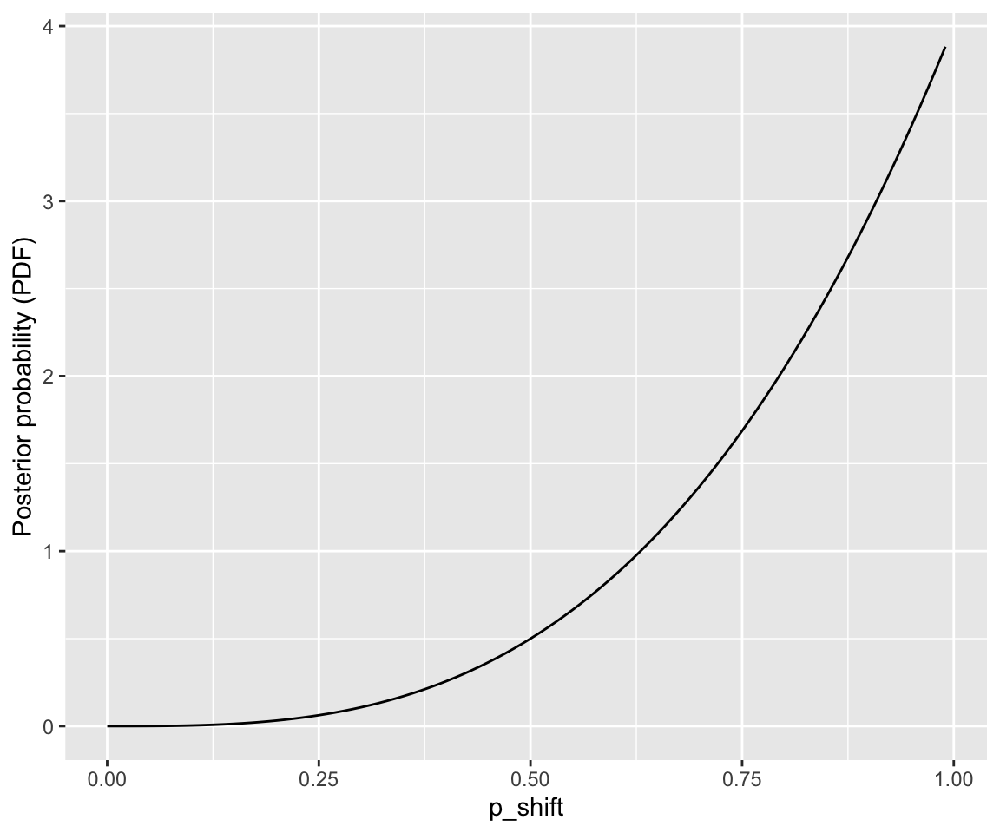
It would be possible to just calculate a median, mode, etc. for this curve, but in practice we almost always work with samples from the posterior (usually from a fitted model):
## take 1000 samples
samples_1 <- rbeta(n=10000, 4, 1)It is useful to start doing so now.
2.3.2 Example posterior 2
The posterior for a model fitted as Exercise 10 last week, after seeing the first 20 observations from diatones (i.e., \(k=20\)):
## week 3, model 1
diatones_m31<-
brm(data = diatones[1:20,],
family = binomial(link = "identity"),
stress_shifted | trials(1) ~ 0 + Intercept,
prior(beta(1, 1), class = b, lb = 0, ub = 1),
file='models/diatones_m31.brm'
)
diatones_m31(I will suppress output/messages/warnings from brms fits from now on, unless they’re relevant for us.)
Practical note
The file argument here saves the fitted model to a file. If the file exists already, brm() just loads the model instead of refitting. This makes it easier for me to write/compile this document, and it’s good practice to use the file argument once you are fitting “real” models (to make sure you don’t lose them once fitted). If you want to refit the model, you then need to delete the corresponding .brm file first. You (reader) can either remove this argument or create a models/ directory.
Extract posterior samples using spread_draws() from tidybayes:
diatones_m31_draws <- diatones_m31 %>% spread_draws(b_Intercept)spread_draws(a) puts the samples (“draws” from the posterior) for parameter(s) a in a tibble in tidy format for subsequent processing or plotting, with many pre-coded routines available (see vignette). diatones_m31_draws has one row for each post-warmup draw (= 4000 rows):
diatones_m31_draws
## # A tibble: 4,000 × 4
## .chain .iteration .draw b_Intercept
## <int> <int> <int> <dbl>
## 1 1 1 1 0.225
## 2 1 2 2 0.348
## 3 1 3 3 0.366
## 4 1 4 4 0.154
## 5 1 5 5 0.426
## 6 1 6 6 0.248
## 7 1 7 7 0.349
## 8 1 8 8 0.298
## 9 1 9 9 0.373
## 10 1 10 10 0.373
## # ℹ 3,990 more rowsPlot the posterior from these samples, using the stat_slab() function from tidybayes:
Code
diatones_m31_draws %>%
ggplot(aes(x = b_Intercept)) +
stat_slab()+ ## one way to visualize posterior; could also e.g. use a histogram
xlab("p_shift")+
ylab("Posterior probability") +
xlim(0,1)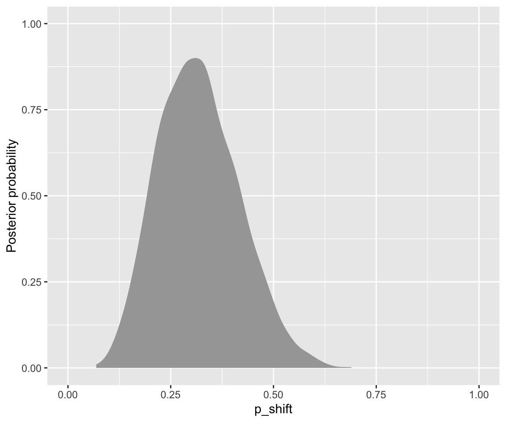
Save the samples of \(p_{\text{shift}}\) as a separate vector for convenience:
samples_2 <- diatones_m31_draws$b_Intercept2.3.3 Intervals
Posterior distributions are often summarized with a credible interval describing where X% of probability lies. Typically X = 95%, by convention. McElreath uses 89% to remind us that there is nothing sacred about 95%, and to avoid triggering NHST thinking using \(p<0.05\).2 Credible intervals are analogous to frequentist “confidence intervals”, but with a more straightforward interpretation.
Two common options for CredI’s (as they’re often abbreviated) are:
- quantile interval (a.k.a percentile): values of \(p\) between 2.5% and 97.5% quantile
- highest posterior density interval (a.k.a highest-density interval): narrowest range of \(p\) containing 95% posterior probability.
Let’s calculate 89% intervals for our two example posteriors:
qi(samples_1, .width = 0.89)
## [,1] [,2]
## [1,] 0.4844551 0.9862567
hdi(samples_1, .width=0.89)
## [,1] [,2]
## [1,] 0.5765895 0.9999929
qi(samples_2, .width=0.89)
## [,1] [,2]
## [1,] 0.1719941 0.4842852
hdi(samples_2, .width=0.89)
## [,1] [,2]
## [1,] 0.1602519 0.468913Note how the QI and HDI for Example 1 are different, while those for a more symmetric distribution (Example 2) are practically the same.
In general, HPDs are better at conveying the shape of the distribution, including where the mode is, and are conceptually preferable to PIs. But HPDs have several drawbacks relative to PIs:
- More computationally intensive to compute.
- More sensitive to how many samples are drawn from the posterior.
- For multimodal posteriors, HPD-based CredI’s can be discontinuous.
- Harder to convey to a reader.
None of this matters for our simple examples, but going forward we will usually use PI-based intervals, as brms (and Stan) do by default. “CI” or “CredI” will mean “quantile-based credible interval”, unless otherwise noted.
In cases where the choice between an HPD and PI-based CredI matters, you arguably should not be describing the posterior just using a point+interval estimate anyway.
2.3.4 Point estimates
Bayesians don’t like reporting a single number to summarize the whole posterior distribution, but humans often find such a number useful. Choices:
- Posterior mode: MAP estimate (maximum a-posteriori)
- Posterior median
- Posterior mean
The mode makes intuitive sense. The median or mean can be justified as minimizing different kinds of loss function (McElreath 2020, 3.2) when trying to guess \(p\).
For our examples:
data.frame(
example=c(1,2),
MAP = c(Mode(samples_1), Mode(samples_2)),
median = c(median(samples_1), median(samples_2)),
mean = c(mean(samples_1), mean(samples_2)
)
) %>% round(3)
## example MAP median mean
## 1 1 1.00 0.842 0.800
## 2 2 0.31 0.312 0.318Again, these different methods differ a lot for a non-symmetric distribution (Example 1) and less for a symmetric distribution (Example 2). Make sure you understand why mean \(<\) median \(<\) MAP for Example 1, given the shape of the distribution (plotted above).
All three point estimates are reported in practice. MAP is common, but has the same disadvantages as HPD-based CredI’s. brms uses the posterior mean by default.
The tidybayes package will calculate these and many other quantities for you via helper functions. For example, to get the median and 95% quantile-based CIs for Example 1:
median_qi(samples_1)
## y ymin ymax .width .point .interval
## 1 0.8416485 0.3995363 0.9936803 0.95 median qiHere, y, ymin, ymax are median and 95% CI boundaries.
2.3.5 Visualizing distributions
In practice it is best to visualize posteriors together with point/interval summaries showing multiple probability values (not just 0.025 and 0.975). tidybayes provides many options,3 such as a “half-eye” plot, which shows the 66% and 95% (quantile-based) CIs by default:
Code
diatones_m31_draws %>%
ggplot(aes(x = b_Intercept)) +
stat_halfeye()+
xlab("p_shift")+
ylab("Posterior probability") +
xlim(0,1)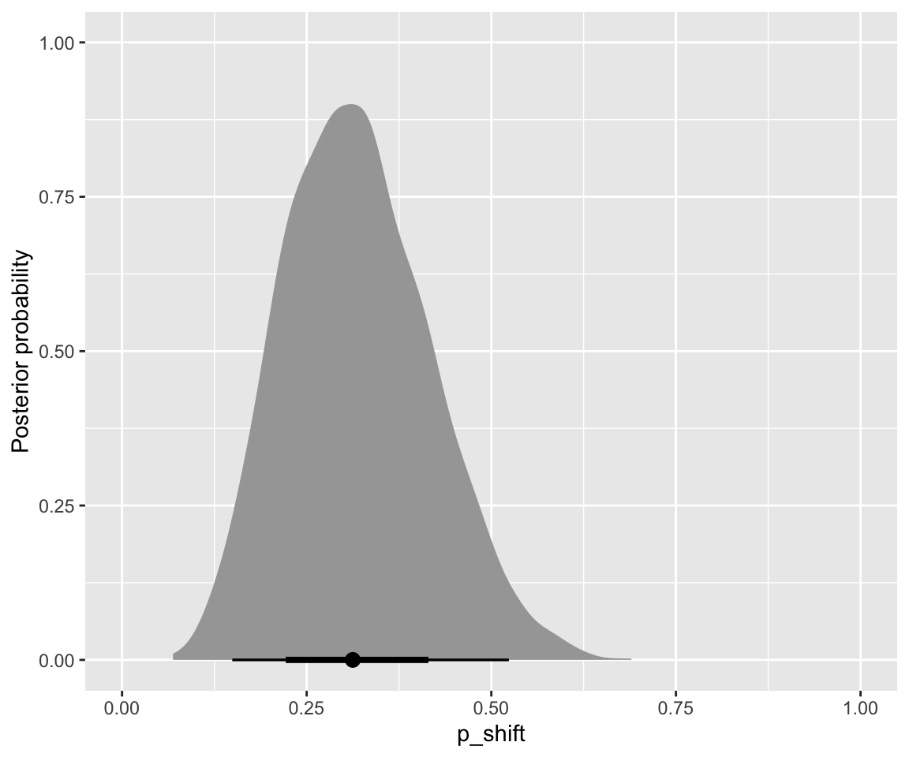
Exercise 2.1 Examine the output of model diatones_m31:
diatones_m31
## Family: binomial
## Links: mu = identity
## Formula: stress_shifted | trials(1) ~ 0 + Intercept
## Data: diatones[1:20, ] (Number of observations: 20)
## Draws: 4 chains, each with iter = 2000; warmup = 1000; thin = 1;
## total post-warmup draws = 4000
##
## Regression Coefficients:
## Estimate Est.Error l-95% CI u-95% CI Rhat Bulk_ESS Tail_ESS
## Intercept 0.32 0.10 0.15 0.52 1.00 1323 1898
##
## Draws were sampled using sampling(NUTS). For each parameter, Bulk_ESS
## and Tail_ESS are effective sample size measures, and Rhat is the potential
## scale reduction factor on split chains (at convergence, Rhat = 1).- What do
Estimate,l-95% CI, andu-95% CImean? (Hint: look at calculations above.) - What do you think
Est.Errormeans? - Extra: Verify your guess by computing this number using our sample from the posterior distribution of the model’s intercept (
samples_2).
Exercise 2.2 Make a visualization of the posterior for Exercise 2.1 using samples_1 (the samples from the posterior). which shows both the density and point/interval summaries.
Note that to use a tidybayes function for this, you’ll first need to make a dataframe with samples_1 as one column.
2.4 Posterior predictive distribution
Above we considered sampling from the posterior to summarize the posterior: what the model says about likely parameter values. This is analogous to frequentist models, where we get parameter estimates, confidence intervals, etc. Another use for the posterior is to understand what the model says about likely data: what McElreath calls its “implied predictions”.
Informally: because Bayesian models are generative, once we know how likely different parameter values are (the posterior), we can simulate new data (observations), by just running the model forward. This is called dummy or fake data.
Let \(\vec{y}\) be the observed data, and \(\vec{\theta}\) be the parameter values. Fitting a model gives the posterior distribution:
\[ \underbrace{P(\vec{\theta} | \vec{y})}_{\text{posterior}} \propto \underbrace{\vec{P(\vec{y} | \vec{\theta})}}_{\text{likelihood}} \underbrace{\vec{P(\vec{\theta})}}_{\text{prior}} \]
The probability distribution for new data, \(\vec{y}_{new}\), is the posterior predictive distribution, \(P(\vec{y}_{new} | \vec{y})\). How likely different values of new data are (\(\vec{y}_{new}\)) is obtained by:4
- For every possible value of the parameters \(\vec{\theta}\):
- Compute how likely \(\vec{y}_{new}\) is under \(\vec{\theta}\) (the likelihood).
- Weight by how likely these parameter value are (the posterior).
- Sum over all parameter values.
We can think of the posterior distribution as a machine for calculating new (fake) datasets. Each simulated observation captures two sources of uncertainty:
- In parameters (the posterior)
- In observations, given the parameter values
Both sources of uncertainty are propagated by the posterior predictive distribution. McElreath (2020), Sec. 3.3.2.2, gives a very nice visualization (Fig. 3.6).
2.4.1 Example
For the diatones_m31 model, where \(\vec{y}\) is a sequence of 20 zeros and 1s, we can use posterior_predict() to simulate 4000 new draws of the data:
pp_ex <- posterior_predict(diatones_m31)
head(pp_ex)
## [,1] [,2] [,3] [,4] [,5] [,6] [,7] [,8] [,9] [,10] [,11] [,12] [,13] [,14]
## [1,] 1 0 0 1 1 0 0 0 0 0 0 0 1 0
## [2,] 0 0 0 1 0 1 0 0 0 1 1 0 0 1
## [3,] 1 0 0 0 1 0 0 0 0 0 0 0 0 1
## [4,] 0 0 0 0 1 0 1 0 0 0 0 0 0 0
## [5,] 1 0 0 0 0 0 0 1 0 0 0 0 1 0
## [6,] 0 0 0 0 1 1 0 0 0 0 0 0 0 1
## [,15] [,16] [,17] [,18] [,19] [,20]
## [1,] 0 0 1 0 0 0
## [2,] 1 1 1 1 0 0
## [3,] 0 1 0 1 1 1
## [4,] 1 0 1 0 0 0
## [5,] 1 0 1 0 0 0
## [6,] 1 1 1 0 0 0Each row is one draw, each column is one of the 20 data points. We can plot these simulated datasets by plotting the distribution of \(k\): the number of shifted stress words (out of 20). This distribution is:
Code
data.frame(num_shifted=apply(posterior_predict(diatones_m31), 1, sum)) %>%
ggplot(aes(x=num_shifted)) +
geom_histogram(bins = 20) +
geom_vline(aes(xintercept=6), lty=2) +
## dotted line: the *observed* number of shifted words.
xlab("k: number of shifted words out of 20")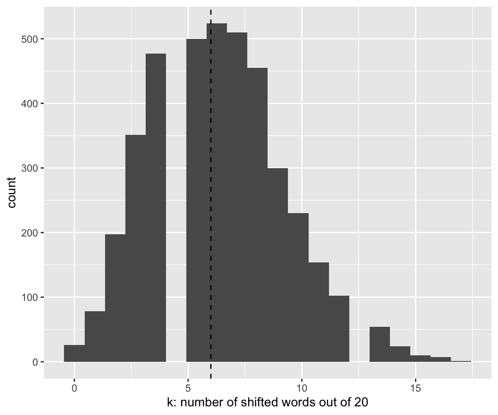
The distribution of predicted \(k\) is quite wide, because it incorporates both sources of variance:
- The 95% CI for \(p_{shift}\) is [0.14, 0.52], corresponding to \(k \in [2.8, 10.4]\) (multiply \(p_{shift}\) by 20)
- The variability in \(k\) expected from observation-level variance, for the MAP estimate of \(p_{shift}\) (0.32), is:
Code
k_vec <- 0:20
data.frame(k = k_vec) %>%
ggplot(aes(x=k, y=dbinom(k, 20, p=0.32))) +
geom_line() +
ylab("Probability (PDF)")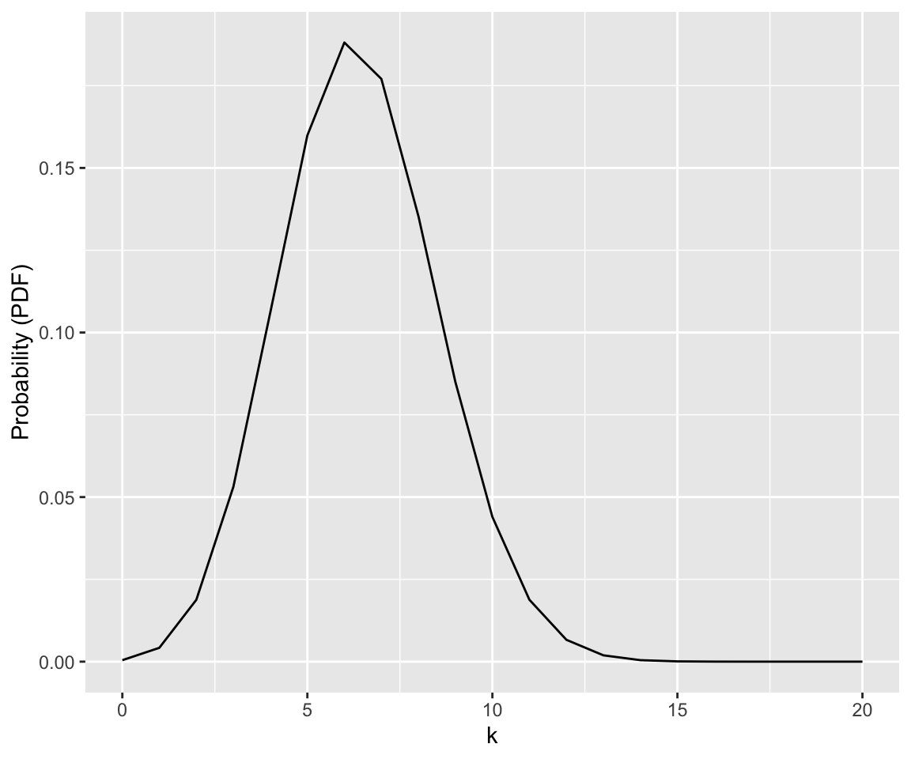
More generally, the posterior predictive distribution allows us to examine any quantity that can be computed from the model. This strength is not apparent for our simple first model; we will return to it below.
Working with (fake data from the) posterior predictive distribution is a powerful method for (McElreath 2020, 3.3):
- model checking (do predictions roughly match observations?)
- model design (will this model do what we expect, given all its moving parts?)
- software validation (if we simulate from a known distribution, then fit a model, do we get back the right parameters?)
- forecasting / model understanding (what does this model predict for cases relevant for our RQs? For new cases?)
We’ll see these uses as we go along.
2.5 More model types
So far we have fit one simple model: an intercept-only binomial model, with an identity link (the single parameter \(p_{\text{shift}}\) was modeled directly).
Let’s learn how to fit more types of models in brms. For now we will stick to models with one fitted parameter, with “uninformative” (flat or very shallow) priors for model parameters. We’ll then move to models with two parameters (below), models with actual predictors (next week), and better priors.
2.5.1 Binomial with logit link
Typically we fit logistic regression to data where \(y=0\) or 1: a binomial model with a logit link. Consider the (frequentist) model fit using glm() to the diatones data, first 20 observations. For observation \(i\):
\[ \text{logit}(P(y_i = 1)) = \alpha , \quad i=1, \ldots n \]
\(\alpha\) is the the probability that stress_shift = 1 in log-odds—the model’s intercept. (In terms of notation we’ve used for our first model, \(\alpha = \text{logit}(p_{shift})\).) To write this as a Bayesian model, we need a prior on \(\alpha\).
\(\alpha\) could be any number in \([-\infty, \infty]\), so it cannot have a uniform prior. Instead we can give it an “uninformative” prior centered around 0:
\[ \alpha \sim N(0, 25) \] (read: normal distribution with mean 0, SD 25.) This is effectively the same as \(p \sim \text{Beta}(1,1)\) (uniform prior), in the sense that both of them are near-flat over values of \(\alpha\) (i.e., log-odds of \(p_{\text{shift}}\)) which are at all reasonable. Here’s what this prior looks like in terms of \(\alpha\):
Code
df <- data.frame(alpha = seq(-10, 10, by=0.01) , p=dnorm(x=seq(-10, 10, by=0.01) , sd = 25))
## log-odds of -5 to 5
df %>% ggplot(aes(x=alpha, y=p)) +
geom_line() +
xlab(expression(alpha)) +
ylab("Probability (density)") +
xlim(-5,5) +
ylim(0, max(df$p)*1.05) +
theme(axis.title.x = element_text(size = 15))
## Warning: Removed 1000 rows containing missing values or values outside the scale range
## (`geom_line()`).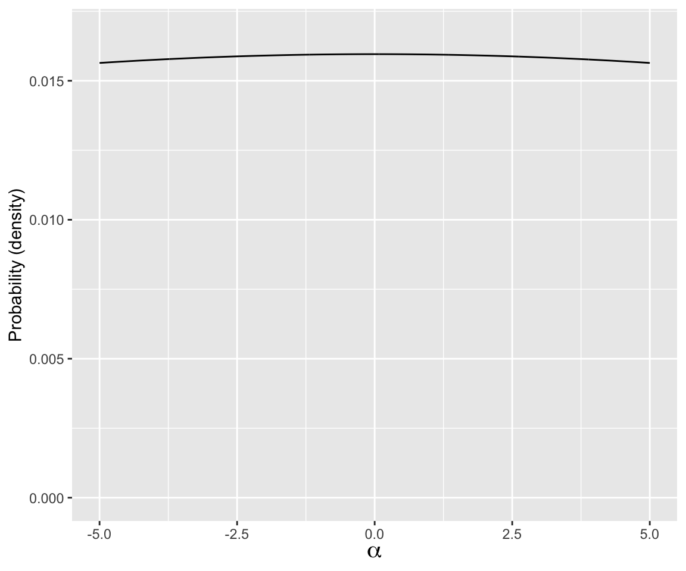
And in terms of \(p_{\text{shift}}\):
Code
## corresponds to p_shift = 0.007 to 0.9933 after inverse-logit transform
## plogis(5)
## plogis(-5)
df %>% ggplot(aes(x=invlogit(alpha), y=p/sum(p))) +
geom_line() +
labs(x = expression(p[shift]~"(=inverse logit("*alpha*"))"), y = "Probability (density)") +
xlim(0.007, 0.9933) +
ylim(0, max(df$p/sum(df$p))*1.05)
## Warning: Removed 1006 rows containing missing values or values outside the scale range
## (`geom_line()`).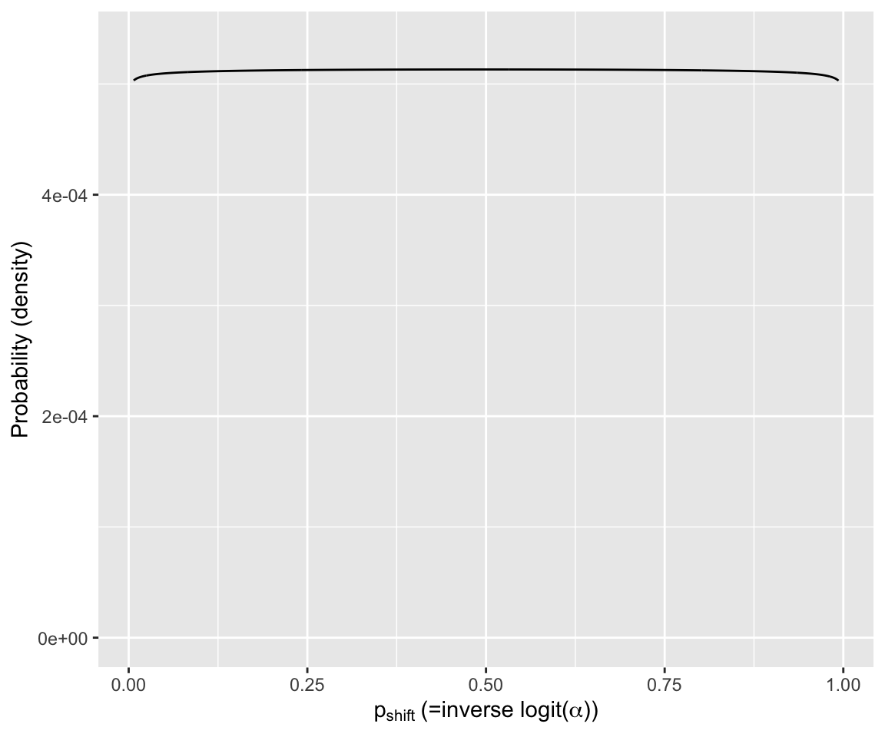
The probability model, written in terms of single observations of \(y\) (stress_shifted):
The second row is also called a Bernoulli distribution: a binomial with \(n=1\).
To fit this model in brms using default settings:5
diatones_m32 <-
brm(data = diatones[1:20,],
family = binomial,
stress_shifted | trials(1) ~ 1,
prior(normal(0, 10), class = Intercept),
file='models/diatones_m32.brm'
)Model results:
diatones_m32
## Family: binomial
## Links: mu = logit
## Formula: stress_shifted | trials(1) ~ 1
## Data: diatones[1:20, ] (Number of observations: 20)
## Draws: 4 chains, each with iter = 2000; warmup = 1000; thin = 1;
## total post-warmup draws = 4000
##
## Regression Coefficients:
## Estimate Est.Error l-95% CI u-95% CI Rhat Bulk_ESS Tail_ESS
## Intercept -0.87 0.48 -1.83 0.01 1.00 1441 1927
##
## Draws were sampled using sampling(NUTS). For each parameter, Bulk_ESS
## and Tail_ESS are effective sample size measures, and Rhat is the potential
## scale reduction factor on split chains (at convergence, Rhat = 1).The estimate for \(\text{logit}(p_{\text{shift}})\) and its Est. Error are similar to a glm() (frequentist) model, shown in Section 2.6.
We will typically fit logistic regression models using the bernoulli family. This simplifies the model formula slightly, and the model fits slightly faster. The code for this would be (not run):
diatones_m32 <-
brm(data = diatones[1:20,],
family = bernoulli,
stress_shifted ~ 1,
prior(normal(0, 10), class = Intercept),
file='models/diatones_m32.brm'
)Exercise 2.3
Visualize the posterior of model
diatones_m32. This is the posterior of the single model parameter \(\alpha\), the log-odds of `stress_shifted = 1.Extra: visualize the posterior of \(\text{invlogit}(\alpha)\), i.e. \(p_{\text{shift}}\). Does it look any different from the posterior for model
diatones_m31?
2.5.2 Poisson regression
Another useful single-parameter model is Poisson regression. This can be thought of as logistic regression, in the case where \(p\) is very small relative to \(N\): we are counting how many times \(y\) something happens, and there is no natural upper bound for \(y\).
\(y\) could be the number of times each word appears in a corpus, the number of words in a lexicon with particular phonotactics, the number of languages spoken in a country, and so on. Poisson regression is not currently widely used for language data, but probably should be (Winter and Bürkner 2021).
In Poisson regression, the log of counts are modeled as a linear function of one or more predictors:
\[ \log(y) = \alpha + \beta_1 x_1 + \cdots \] Because of the logarithm, the interpretation of \(\exp(\alpha)\) is “average value of \(y\), the interpretation of \(\exp(\beta_1)\) is”how much \(y\) is multiplied by when \(x_1\) is increased by 1”, and so on.
Note the similarities with logistic regression: \(\log\) (instead of logit) on the LHS, and no error term on the RHS. Just as logistic regression can be usefully thought of as modeling the probabilities \(p_i\) of events occurring, Poisson regression can be thought of as modeling the rates \(\lambda_i\) of events occurring:
\[\begin{eqnarray} y_i & \sim \text{Poisson}(\lambda_i) \\ \log(\lambda_i) & \sim \alpha + \beta_1 x_1 + \cdots \end{eqnarray}\]Here \(y_i\) follows the Poisson distribution, which has an important property: its mean and variance are equal. This means that a Poisson regression model assumes that \(E(y) = \text{var}(y)\): the amount of “dispersion” in the data is fixed.
We will use as an example the dyads data, with \(y\) the gestures count. The empirical distribution of gestures looks like:
Code
dyads %>% ggplot(aes(x=gestures)) + geom_histogram(bins=10)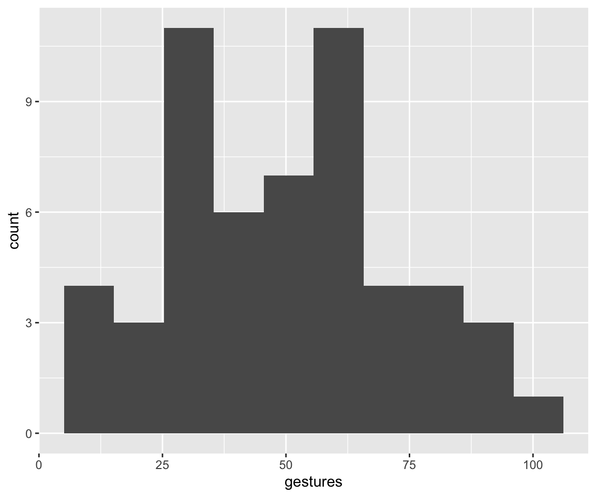
For now we will assume there are no predictors: the only coefficient is the intercept. A Poisson model is a kind of generalized linear model (GLM), like logistic regression, so to fit a frequentist model we would use glm()6
dyads_freq_mod <- glm(gestures ~ 1, family= poisson, data=dyads)
tidy(dyads_freq_mod)
## # A tibble: 1 × 5
## term estimate std.error statistic p.value
## <chr> <dbl> <dbl> <dbl> <dbl>
## 1 (Intercept) 3.90 0.0194 202. 0The predicted mean of gestures is \(e^{3.9}\)=exp(3.9), which is very close to the observed mean (mean(dyads$gestures)).
To make a Bayesian model, we just need to add a prior for the intercept term; we use an uninformative prior. The probability model is:
\[\begin{align} y & \sim \text{Poisson}(\lambda) \\ \log(\lambda) & \sim N(0,10) \end{align}\](Here we have defined \(\lambda = \exp(\alpha)\).) This prior is relatively flat over the range of reasonable mean counts (\(\lambda\)).
To fit this model in brms:
dyads_m31 <-
brm(data = dyads,
gestures ~ 1,
family = poisson,
prior = prior(normal(0, 10), class='Intercept'),
file='models/dyads_m31.brm'
)Let’s extract posterior samples using spread_draws() from tidybayes:
dyads_m31 %>% spread_draws(b_Intercept) -> dyads_m31_draws
dyads_m31_draws
## # A tibble: 4,000 × 4
## .chain .iteration .draw b_Intercept
## <int> <int> <int> <dbl>
## 1 1 1 1 3.88
## 2 1 2 2 3.89
## 3 1 3 3 3.89
## 4 1 4 4 3.92
## 5 1 5 5 3.93
## 6 1 6 6 3.88
## 7 1 7 7 3.91
## 8 1 8 8 3.87
## 9 1 9 9 3.88
## 10 1 10 10 3.89
## # ℹ 3,990 more rowsPlot the posterior of \(\lambda\):
Code
dyads_m31_draws %>%
ggplot(aes(x = b_Intercept)) +
stat_halfeye() +
scale_x_continuous(expression(lambda:~"log(mean gestures)")) +
ylab("Posterior probability")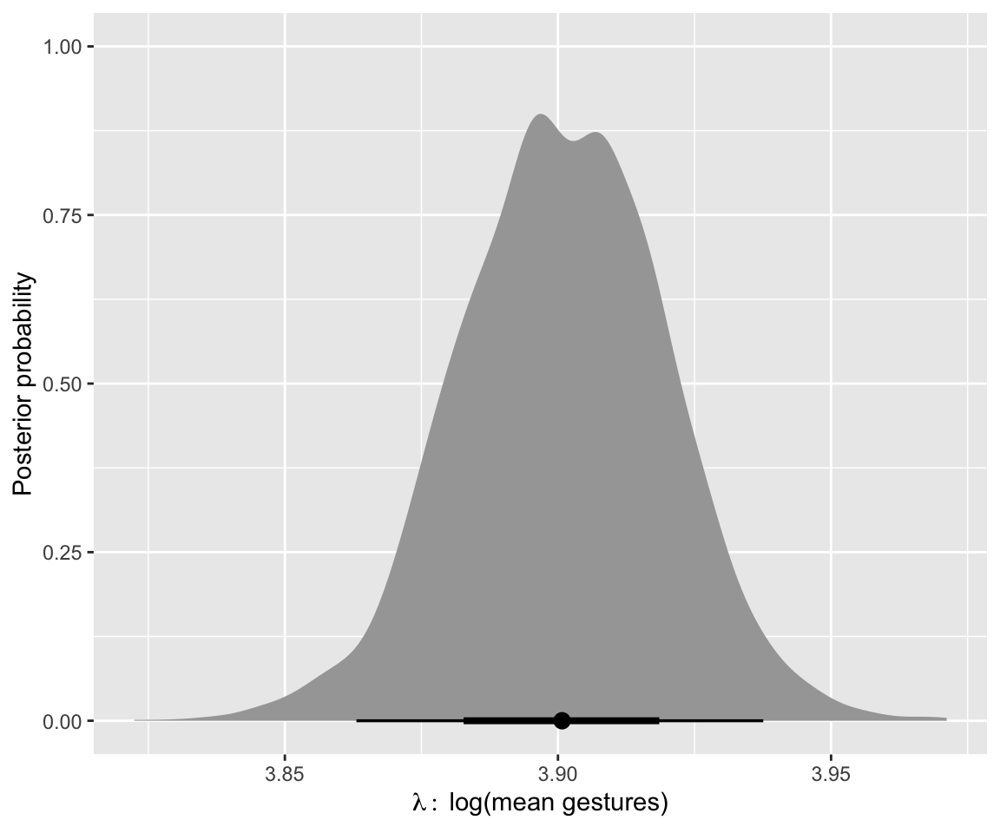
The estimate and 95% CI looks very similar to the glm() (frequentist) model above.
2.5.2.1 Posterior predictive checks
This is a good example to introduce posterior predictive checks: checking the model graphically comparing simulated datasets to the observed data.7 The most basic PPC is to simulate \(N\) new datasets for \(y\) and plot their distributions on top of the observed distribution of \(y\).
We do this using pp_check() from brms, which is an interface to a wide range of PPCs from the useful bayesplot package.
## N=25 new datasets
pp_check(dyads_m31, ndraws=25)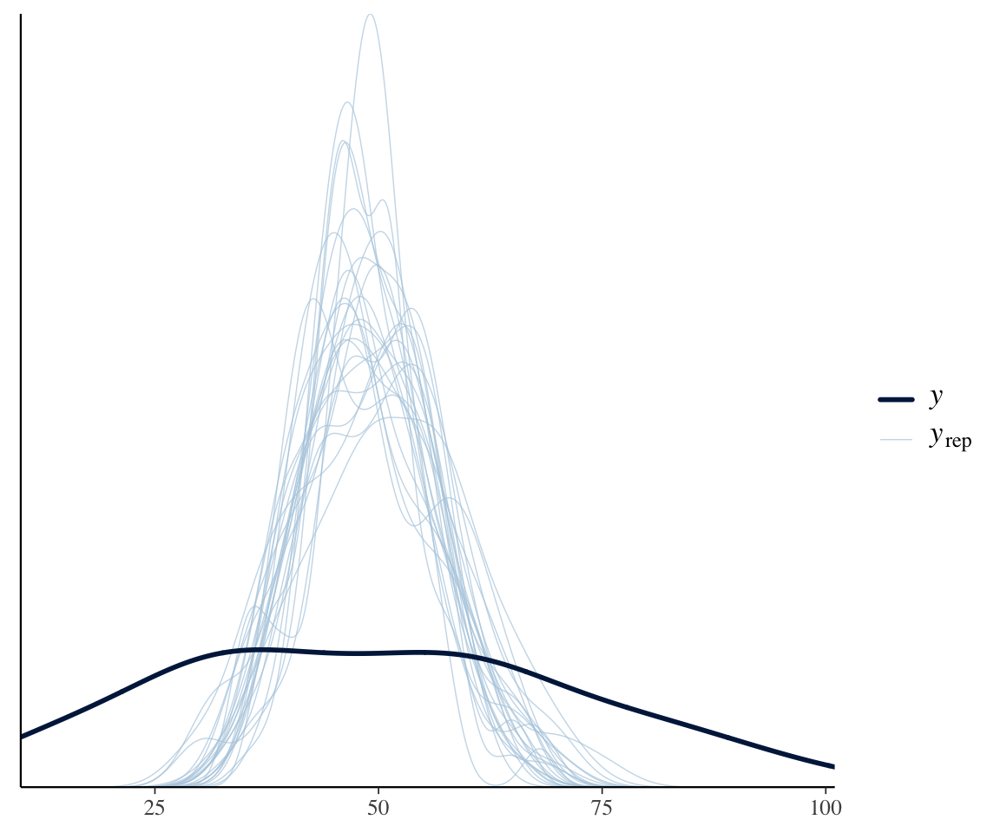
The extreme mismatch here suggests this is not a good model. It is visually clear what the problem is: The Poisson model matches the mean of gestures well, but not its variance.
Another way to see this, which also introduces another useful posterior predictive check, is to plot different summaries of the distribution—such as its mean and variance:8
pp_check(dyads_m31, type='stat', stat='mean') /
pp_check(dyads_m31, type='stat', stat='var')
## Using all posterior draws for ppc type 'stat' by default.
## Using all posterior draws for ppc type 'stat' by default.
## `stat_bin()` using `bins = 30`. Pick better value with `binwidth`.
## `stat_bin()` using `bins = 30`. Pick better value with `binwidth`.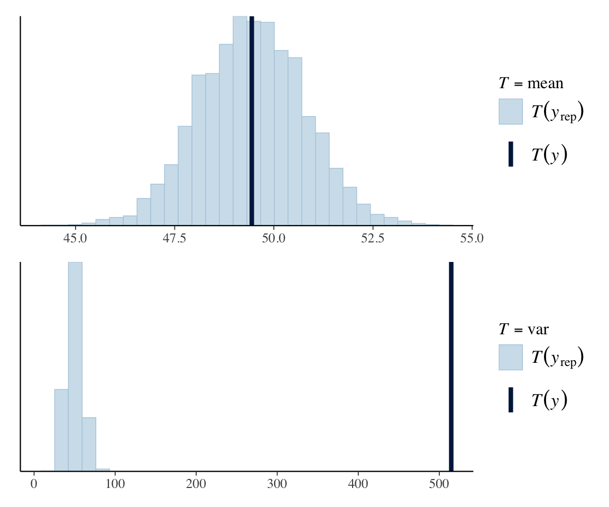
The underlying issue is that the mean and variance of gestures are not equal, as assumed by the Poisson distribution. We will return to this below to motivate a new model type.
Practical note
In current practice, the first PPC plot (simulated data distribution overplotted on empirical distribution) is common as part of the standard checks one performs on a fitted model. PPC plots of posterior summaries, such as mean and variance, are not common. It’s safe to say that we should be performing a lot more posterior predictive checks to evaluate our fitted model, but which PPCs are most appropriate will depend on your exact case. McElreath (2020) 3.3.2.2 discusses this issue.
Exercise 2.4 What is the ratio \(\text{var}(y)/ \text{mean}(y)\) for the empirical data (gestures)?
2.5.3 Normal distribution: linear regression
Let’s move on to data distributed according to a normal distribution, which has two parameters:
- \(\mu\): mean of \(y\) (i.e. expected value: \(E(y)\))
- \(\sigma\): standard deviation of \(y\) (\(\text{var}(y) = \sigma^2\))
Standard (frequentist) linear regression of \(y\) as a function of 1+ predictors can be written:
\[\begin{align} y &\sim N(\mu, \sigma) \\ \mu & = \alpha + \beta_1 x_1 + \cdots \end{align}\]Let’s consider the simplest case, the intercept-only model. Two parameters are fitted:
- \(\alpha\): “intercept”
- \(\sigma\): “residual variance”
Each observation \(y_i\) is predicted to have the same value plus normally distributed noise.
Example data: english_250
englishdataset fromlanguageR9- \(y\):
RTlexdec(lexical decision reaction time) - Take a random subset of 250 observations, to make things more interesting.
## set seed, so you'll get the same "random" sample
set.seed(100)
english_250 <- english[sample(1:nrow(english), 250),]To write down a probability model for this case, we need priors on \(\alpha\) and \(\sigma\). As above, it makes sense to give \(\alpha\) an “uninformative” prior, which requires knowing something about likely values of \(y\). Its empirical distribution is:
ggplot(aes(x=RTlexdec), data=english_250) +
geom_histogram(bins = 30) 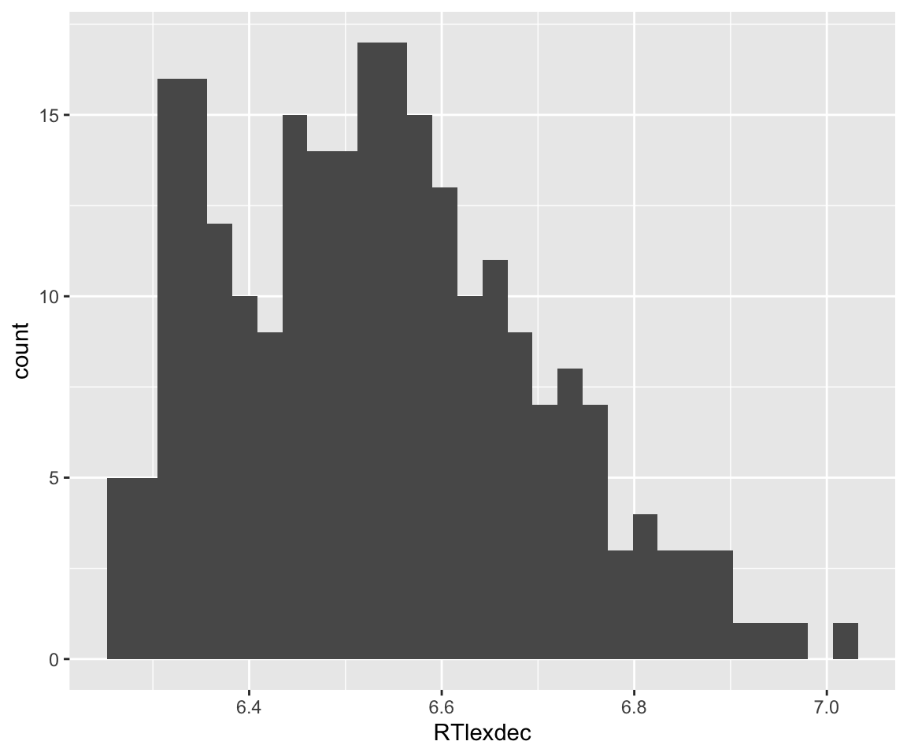
Note the \(x\)-axis range. Certainly \(\alpha \sim N(0,100)\) would be an uninformative prior. (It’s essentially flat over possible values of \(\alpha\), say -10 to 10, corresponding to reaction times of 0.00005 to 22026 seconds!)
What should the prior for \(\sigma\) be? It must satisfy two conditions:
- Only allow positive values of \(\sigma\) (\(\sigma>0\)).
- It can’t be flat; it must decrease as \(\sigma\) increases.
One choice, used by McElreath in Chap. 4, is \(\sigma \sim \text{Uniform}(0,10)\)—replacing 10 by however large a number is needed given the scale of \(y\). This works for current purposes, but for more realistic models, neither uniform nor normal distributions turn out to be a good choice for variance parameters. Normal distributions are “light-tailed”—they decrease in probability too fast as \(\sigma\) increase, making making MCMC sampling inefficient.
It is better to instead use a “heavy-tailed” distribution, which decreases slowly as \(\sigma\) is increased. Most commonly used are the half-Cauchy and exponential distributions with a large “scale” parameter (see McElreath 2020, chap. 9).10
We will use the half-Cauchy distribution for now; this is the Cauchy distribution restricted to positive values. Here is what the PDF of \(\sigma\) looks like when \(\sigma \sim \text{HalfCauchy}(0,5)\) (scale = 0, shape = 5):
Code
data.frame(sig=seq(0, 20, by=0.1)) %>%
mutate(prob=dcauchy(sig, scale = 5)) %>%
ggplot(aes(x=sig, y=prob)) +
geom_line() +
ylab("Prior probability (PDF)") +
xlab("sigma")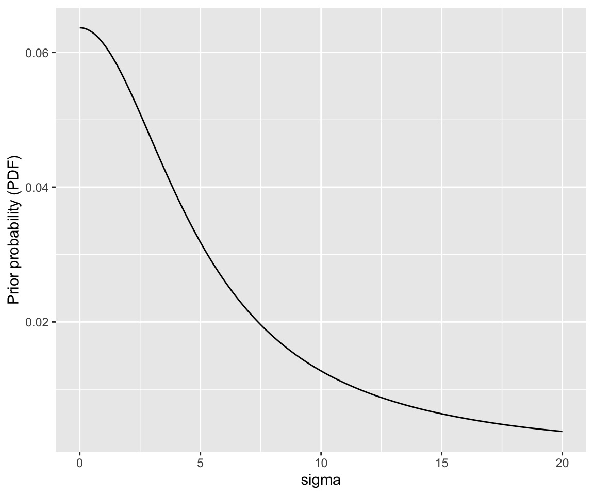
This distribution decreases gradually from 0, with a “long tail”: higher values of \(\sigma\) are progressively less likely, but still have enough probability that they can be learned if the data strongly supports them. The scale here has been chosen so that the prior is effectively flat for possible values of \(\sigma\): values of RTlexdec are always 6–7 range, so \(\sigma\) is certainly not larger than ~1–2. (But if our \(y\) ranged from 0 to 100, we’d need to choose a much larger scale parameter for \(\sigma\) to make the prior “uninformative”.)
The probability model for \(y\) (RTlexdec) is then:
To fit this model in brms:
english_m31 <-
brm(data = english_250,
RTlexdec ~ 1,
family = gaussian,
prior = c(prior(normal(0, 100), class=Intercept),
prior(cauchy(0, 5), class = sigma)
),
file='models/english_m31.brm'
)(Note how prior is now a vector to set multiple priors.)
This model results in posteriors for both the \(\mu\) and \(\sigma\) parameters:
english_m31
## Family: gaussian
## Links: mu = identity; sigma = identity
## Formula: RTlexdec ~ 1
## Data: english_250 (Number of observations: 250)
## Draws: 4 chains, each with iter = 2000; warmup = 1000; thin = 1;
## total post-warmup draws = 4000
##
## Regression Coefficients:
## Estimate Est.Error l-95% CI u-95% CI Rhat Bulk_ESS Tail_ESS
## Intercept 6.53 0.01 6.52 6.55 1.00 3931 2984
##
## Further Distributional Parameters:
## Estimate Est.Error l-95% CI u-95% CI Rhat Bulk_ESS Tail_ESS
## sigma 0.16 0.01 0.15 0.18 1.00 3632 2243
##
## Draws were sampled using sampling(NUTS). For each parameter, Bulk_ESS
## and Tail_ESS are effective sample size measures, and Rhat is the potential
## scale reduction factor on split chains (at convergence, Rhat = 1).Compare to the equivalent frequentist model, shown in Section 2.6: it estimates \(\mu\) and \(\sigma\) (the “residual variance”), but only \(\mu\) is a first-class model parameter (shown with a SE, \(p\), etc.).
This means we could examine the posterior distribution for \(\sigma\) (below), or for \(\sigma\) and \(\mu\) (see Exercise below)—though we have no particular reason to do so in this case.
Code
## compare to the prior, above
english_m31 %>%
spread_draws(sigma) %>%
ggplot(aes(x = sigma)) +
geom_density(fill = "black") +
ylab("Posterior PDF")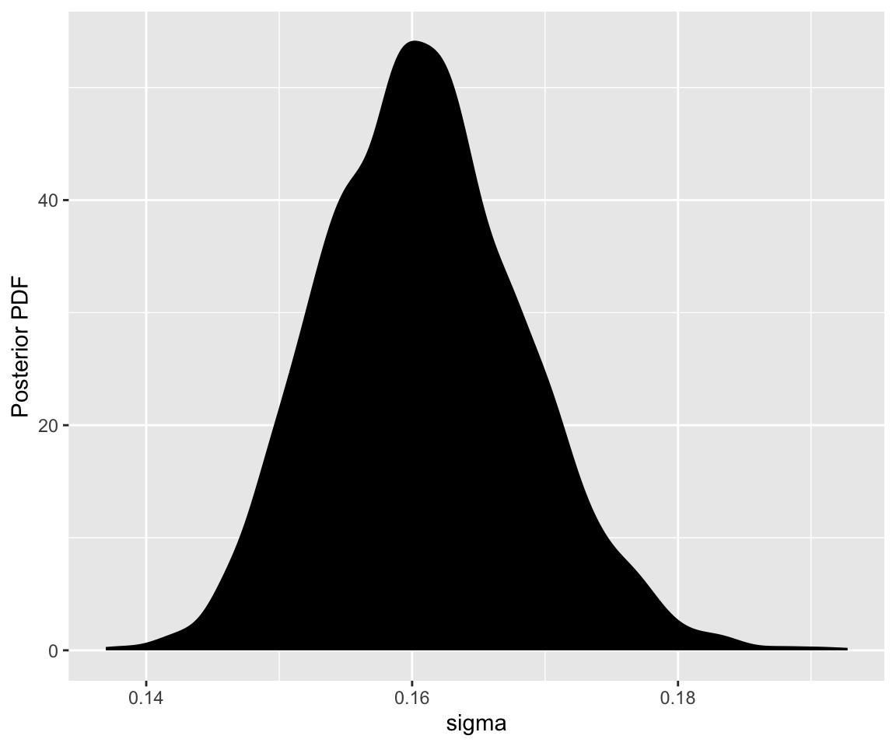
2.5.3.1 Parameter names
Now that we are working with \(>1\) parameter, let’s familiarize ourselves with a couple more aspects of working with a brms model.
To extract draws you need parameter names, which can be unclear from the brms output. You can always see all a model’s parameters using get_variables():
get_variables(english_m31)
## [1] "b_Intercept" "sigma" "Intercept" "lprior"
## [5] "lp__" "accept_stat__" "stepsize__" "treedepth__"
## [9] "n_leapfrog__" "divergent__" "energy__"Anything ending with __ are internal parameters of the MCMC algorithm which we typically ignore.11
2.5.3.2 Diagnostics: first look
When fitting brms/Stan models it is important to inspect the posterior samples to make sure the chains “mixed” properly and you really are getting a good sample from the posterior. This is an important difference from frequentist models, whose fitting algorithm will typically give you something sensible with default settings, regardless of the data you feed it (within reason).
We will spend more time on model diagnostics soon, but for now note that plot() shows basic diagnostics: posterior distributions and trace plots for each parameter:
plot(english_m31)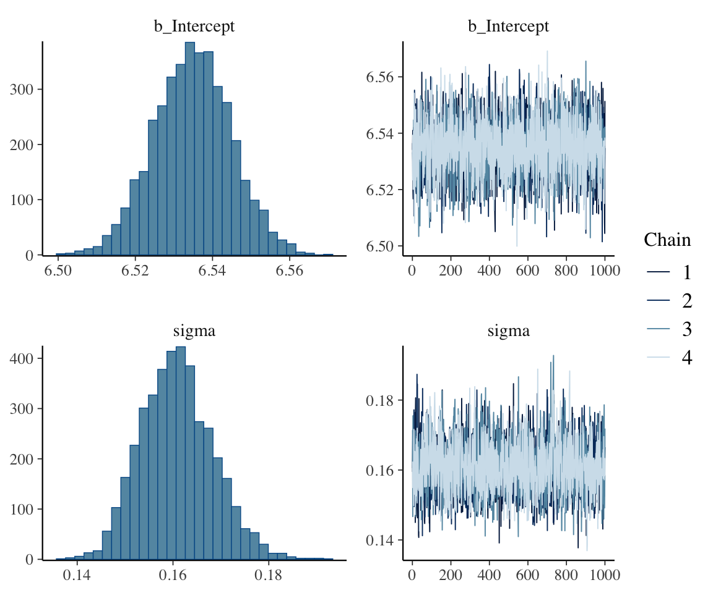
The trace plots look good: a “hairy caterpillar” with no chain visibly different from the others. This visual diagnostic is an important basic sanity check for any model fitted with MCMC, even simple ones.
Exercise 2.5
- Examine the trace plot for
dyads_m31, to help convince yourself that the model issue we found (predicted variance doesn’t match the sample) isn’t due to a fit issue.
Exercise 2.6
Extract posterior draws for
english_m31of both \(\alpha\) and \(\sigma\) in one dataframe. (Hint: change the arguments ofspread_draws().Extra: Make a heatmap showing the posterior over both variables (\(x\)-axis = \(\alpha\), \(y\)-axis = \(\sigma\), color=probability density). Hint:
geom_density_2d_filled(), or see (Kurz 2023, 4.3.6).
2.5.4 Negative binomial distribution
We saw above that model dyads_m1 under-predicts variance. By fitting the mean of \(y\) correctly, the model is forced to assume the variance of \(y\) is also \(\mu\)—but in reality, the variance is much higher. This situation is called overdispersion, and is extremely common when fitting (frequentist or bayesian) Poisson models—the data is noisier than predicted by a Poisson distribution.12
The negative binomial (or gamma-Poisson) model is a generalization of the Poisson distribution which allows \(\sigma^2\) (variance of \(y\)) to be fitted, rather than assuming that it is the same as \(\lambda\) (the mean of \(y\)).13 For for our purposes, all we need to know is that a negative-binomial distribution is analogous to a normal distribution (scale and shape parameters), but for count data.
Let’s fit a negative-binomial (see Kurz 12.1.2 if interested)) for this case to see what happens. The scale parameter has the same interpretation as for the Poisson model (log-mean-counts), so we use the same prior as above. Let’s not worry about the interpretation of the shape parameter, and just use brms’s default prior.14
dyads_m32 <- brm(data = dyads, family = negbinomial,
gestures ~ 1,
prior = prior(normal(0, 10), class = Intercept),
file='models/dyads_m32.brm'
)dyads_m32
## Family: negbinomial
## Links: mu = log; shape = identity
## Formula: gestures ~ 1
## Data: dyads (Number of observations: 54)
## Draws: 4 chains, each with iter = 2000; warmup = 1000; thin = 1;
## total post-warmup draws = 4000
##
## Regression Coefficients:
## Estimate Est.Error l-95% CI u-95% CI Rhat Bulk_ESS Tail_ESS
## Intercept 3.90 0.07 3.77 4.04 1.00 2955 2566
##
## Further Distributional Parameters:
## Estimate Est.Error l-95% CI u-95% CI Rhat Bulk_ESS Tail_ESS
## shape 4.41 0.92 2.84 6.42 1.00 3142 2470
##
## Draws were sampled using sampling(NUTS). For each parameter, Bulk_ESS
## and Tail_ESS are effective sample size measures, and Rhat is the potential
## scale reduction factor on split chains (at convergence, Rhat = 1).Note the less certain estimate for the intercept, relative to model dyads_31: this is a good thing.
We should always check trace plots (which here look good):
plot(dyads_m32)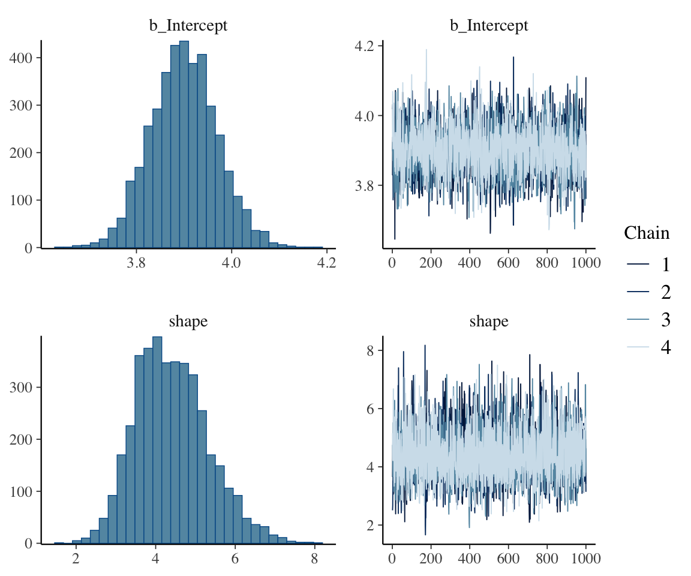
The posterior now looks much closer to the empirical data:
pp_check(dyads_m32, ndraws = 25)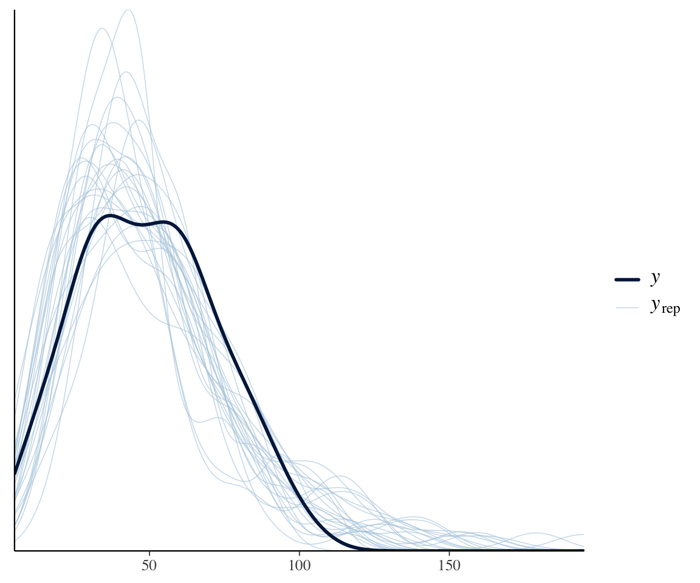
This is clearly not a good model (note the mismatch especially around 25-60), which makes sense as it contains no predictors, but at least it now has the same rough shape as the empirical data. Both the predicted mean and variance now look reasonable, in the sense that the observed values lie within the distributions of predicted values:
pp_check(dyads_m32, type='stat', stat='mean') /
pp_check(dyads_m32, type='stat', stat='var')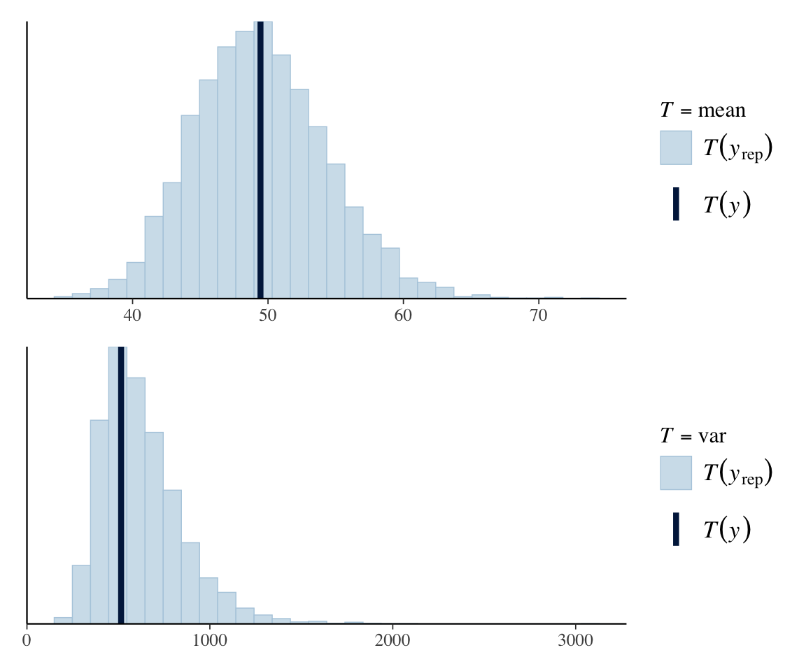
We can examine in particular the posterior distribution of \(\text{var}(y)/\text{mean}(y)\), which we’ll call \(\phi\). We do this by defining a custom function phi().
phi <- function(x){var(x)/mean(x)}
pp_check(dyads_m32, type='stat', stat=phi)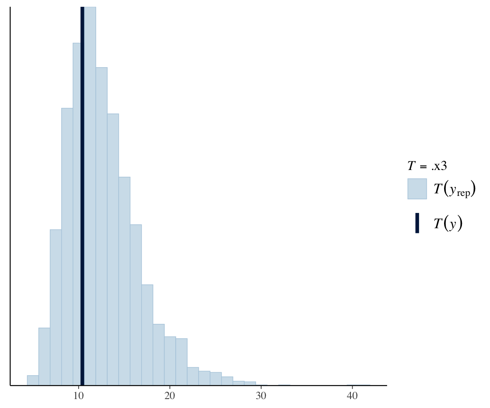
The model now better captures the amount of dispersion in the data (variance/mean ratio).
Exercise 2.7 Make the same plot for model dyads_m31, to make sure the model really does show overdisperson. (Observed \(\phi\) value outside the predicted distribution of \(\phi\).)
2.6 Appendix: Extra material
2.6.1 Frequentist logistic regression model
m1_glm <- glm(stress_shifted ~ 1, data=diatones[1:20,], family=
'binomial')
summary(m1_glm, conf.int = TRUE)
##
## Call:
## glm(formula = stress_shifted ~ 1, family = "binomial", data = diatones[1:20,
## ])
##
## Coefficients:
## Estimate Std. Error z value Pr(>|z|)
## (Intercept) -0.8473 0.4879 -1.736 0.0825 .
## ---
## Signif. codes: 0 '***' 0.001 '**' 0.01 '*' 0.05 '.' 0.1 ' ' 1
##
## (Dispersion parameter for binomial family taken to be 1)
##
## Null deviance: 24.435 on 19 degrees of freedom
## Residual deviance: 24.435 on 19 degrees of freedom
## AIC: 26.435
##
## Number of Fisher Scoring iterations: 42.6.2 Frequentist linear regression model
english_m1_lm <- lm(RTlexdec ~ 1, data=english)
summary(english_m1_lm)
##
## Call:
## lm(formula = RTlexdec ~ 1, data = english)
##
## Residuals:
## Min 1Q Median 3Q Max
## -0.34477 -0.12457 0.00037 0.10311 0.63771
##
## Coefficients:
## Estimate Std. Error t value Pr(>|t|)
## (Intercept) 6.550097 0.002322 2821 <2e-16 ***
## ---
## Signif. codes: 0 '***' 0.001 '**' 0.01 '*' 0.05 '.' 0.1 ' ' 1
##
## Residual standard error: 0.1569 on 4567 degrees of freedom2.6.3 Poisson regression model with predictors
Exercise 2.8 Consider the empirical effects of of context and language on gesture count:
ggplot(aes(x=context, y=gestures), data=dyads) + geom_boxplot() + xlab("Context") + ylab("Gestures") + scale_y_log10()
ggplot(aes(x=language, y=gestures), data=dyads) + geom_boxplot() + xlab("Context") + ylab("Gestures") + scale_y_log10()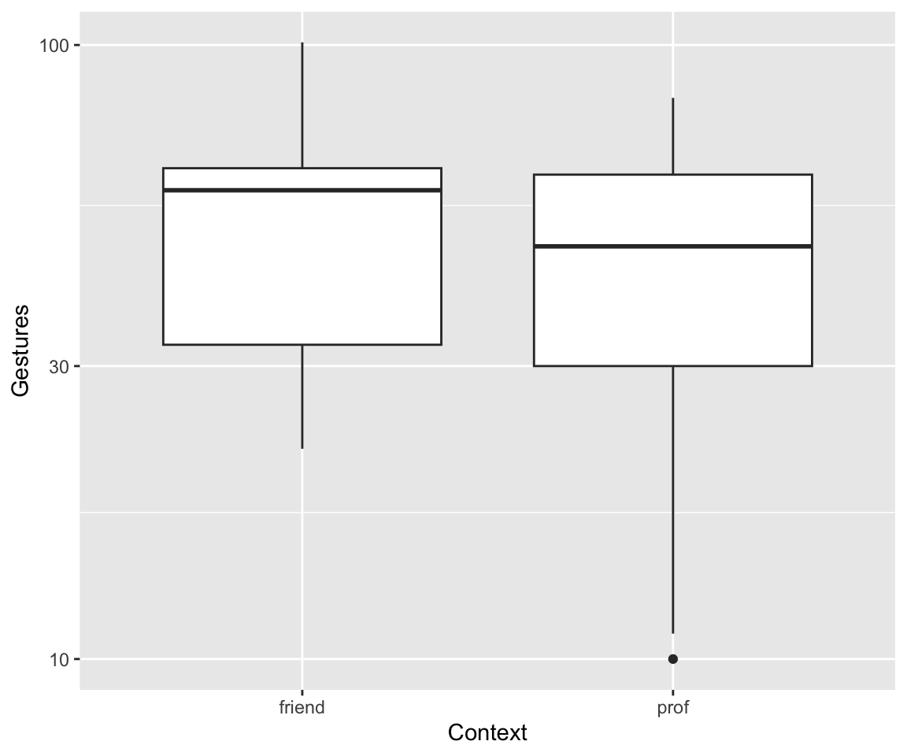
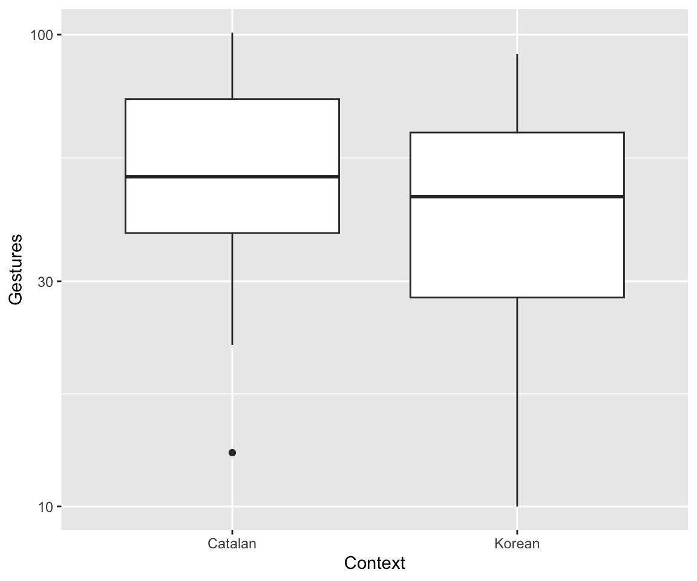
(The \(y\)-axis is on a log scale, as usually makes sense for count data.)
Fit this Poisson regression model:
dyads_freq_mod2 <- glm(gestures ~ context + language , family= poisson, data=dyads)What are the interpretations of the context and language coefficients?
Like all “tidy” packages to do \(x\): you don’t have to use this package to do \(x\), it just makes things much easier if you are working with tidyverse packages already.↩︎
He also calls these compatibility intervals, to avoid the implications of “compatibility” or “confidence”, but this is non-standard.↩︎
See this
ggdistvignette for other possible visualizations.↩︎In an equation: \[ \underbrace{P(\vec{y}_{new} | \vec{y})}_{\text{posterior predictive distribution}} \propto \int P(\vec{y}_{new} | \vec{\theta}) P(\vec{\theta} | \vec{y}) d\vec{\theta} \] Another description, from Nicenboim et al. Sec. 3.5: “After we have seen the data and obtained the posterior distributions of the parameters, we can now use the posterior distributions to generate future data from the model. In other words, given the posterior distributions of the parameters of the model, the posterior predictive distribution gives us some indication of what future data might look like.”↩︎
Technically:
family = binomialmeans “GLM for binomial distribution with logit link”, often just called “logistic regression”.↩︎Specifically,
family=poissonfits a Poisson model with a log link.↩︎Note that mean/var from all 4000 draws are now plotted, not just the first \(N=25\).↩︎
This dataset is from the languageR package Baayen and Shafaei-Bajestan (2019) and described in detail on its help page (
?english) or in Baayen (2008). Our use of this dataset follows Sonderegger (2023) (Sec. 4.1.2), where it is used extensively for linear regression.↩︎More details: see Gelman (2006), and updated recommendations in the Stan Prior Choice Recommendations doc.↩︎
For example,
lp__stands for “log posterior”. Stan defines the log-posterior up to a constant, which is treated as an unknown variable;lp__is this “log kernel” (see here and here).↩︎“Underdispersion” is theoretically possible, but much less common in practice. Overdispersion is so common that it is bad teaching to show you Poisson regression without discussing overdispersion, which is why we’ve taken this detour to a scary-sounding model.↩︎
If you are curious: the variance is \(\sigma^2 = \mu(1 + \frac{\mu}{\phi})\) and the shape parameter is \(\phi\), following the alternative paramterization in Stan. Thus, \(\phi > 0\), and small/large \(\phi\) = high/low overdispersion.)↩︎